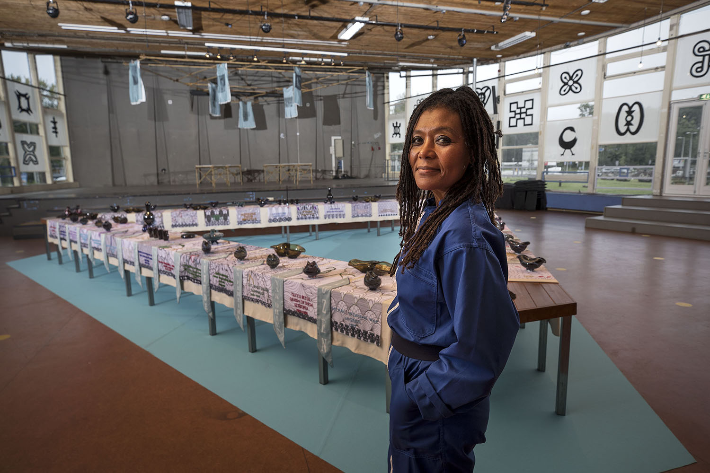
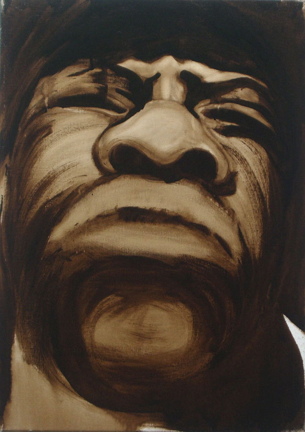
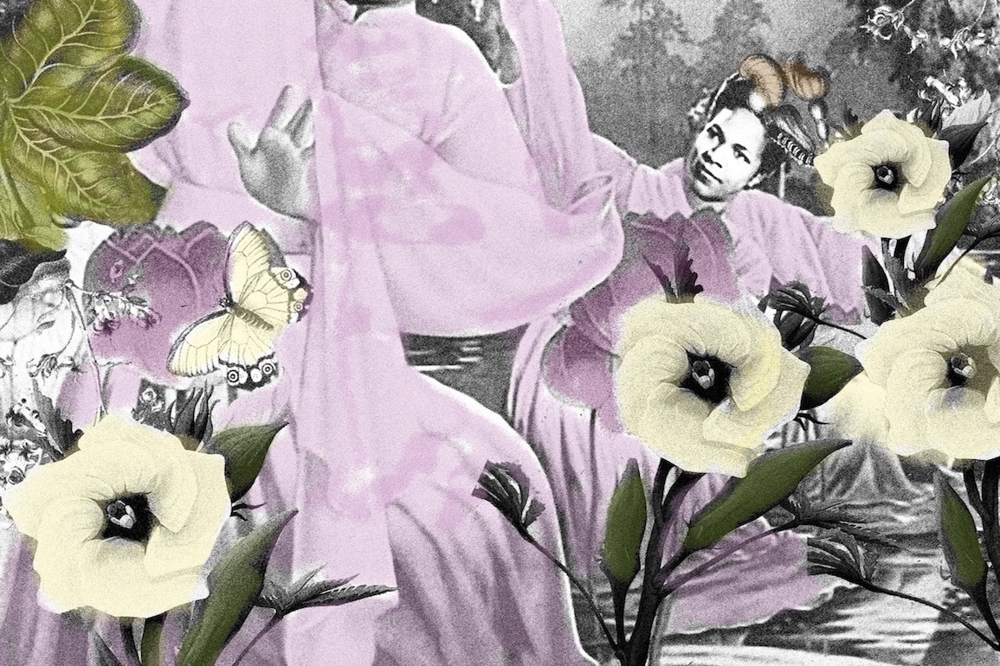

arrival

In this part, Kaersenhout reimagines the arrival of European settlers in the early 17th century. She interweaves historical events with dreamlike, surreal elements to emphasize the shock and confusion of the encounter between the indigenous people and the newcomers. The story focuses on the first encounters, the exchanges of goods and ideas, and the disruption these events caused in the lives of the Lenape.
Kaersenhout paints scenes of the first contacts where gifts were exchanged, but also the misunderstandings and growing tensions that arose. This section highlights the cultural clashes and the impact of European diseases on the indigenous population.
angry black men

The Angry Black Men are painted with tar on canvas because of the paradox in meanings. As an adjective ‘teer’ in Dutch means fragile, frail and delicate while the noun teer (tar) in Dutch also means a tough, poisonous, black and impenetrable material. This symbolizes for me one of the characteristics of some black men.
Object of love and Desire

The textile works Objects of Love and Desire (2019) depict women in action. Portraits of Una Marson, Solange Fitte-Duval, Eslanda Robeson and Amy Garvey are rendered in a distinctive mode of digitally and traditionally printed fabrics, both hand- and machine-embroidered, with highlights of fine bead-work and appliqué. These four important black scholars, journalists, poets, activists hinges on their commonalities: all of Caribbean descent, but influential world-wide; all part of communist, Pan-Africanist, and transnational feminist movements; all active in the second half of the 20th century, though largely forgotten or erased from popular memory. Each of these women used her lifetime to fight racism, poverty and general inequality.
The women are shown as heroic figures, based on Chinese propaganda posters that express the glorification of the proletariat. Each banner is framed with printed cottons that the artist has collected from the African continent. Intricate bead-work highlights their features. The poems of Una Marson accomany three of the portraits, over-printed with the powerfully symbolic okra flower; and botanical illustrations by Maria Sibylla Merian, a 17th Century German-born naturalist who studied the insects of Suriname.
Object of love and Desire
The textile works Objects of Love and Desire (2019) depict women in action. Portraits of Una Marson, Solange Fitte-Duval, Eslanda Robeson and Amy Garvey are rendered in a distinctive mode of digitally and traditionally printed fabrics, both hand- and machine-embroidered, with highlights of fine bead-work and appliqué. These four important black scholars, journalists, poets, activists hinges on their commonalities: all of Caribbean descent, but influential world-wide; all part of communist, Pan-Africanist, and transnational feminist movements; all active in the second half of the 20th century, though largely forgotten or erased from popular memory. Each of these women used her lifetime to fight racism, poverty and general inequality.
The women are shown as heroic figures, based on Chinese propaganda posters that express the glorification of the proletariat. Each banner is framed with printed cottons that the artist has collected from the African continent. Intricate bead-work highlights their features. The poems of Una Marson accomany three of the portraits, over-printed with the powerfully symbolic okra flower; and botanical illustrations by Maria Sibylla Merian, a 17th Century German-born naturalist who studied the insects of Suriname.